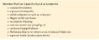

Dry eye (also called dry eye disease or syndrome, keratoconjunctivitis sicca) is a multifactorial disease of the ocular surface characterized by a loss of homeostasis of the tear film that is accompanied by ocular discomfort and/or blurred vision. Tear film instability and associated hyperosmolarity, ocular surface inflammation and damage, and neurosensory abnormalities play etiologic roles in this disease. Dry eye results from disturbance of the lacrimal functional unit, an integrated system comprising the lacrimal glands, cornea, conjunctiva, and eyelids, as well as the sensory and motor nerves connecting these components. See Chapter 1 for a discussion of the lacrimal functional unit.
The prevalence of dry eye increases with age (10% of individuals aged 30–60 years and 15% of adults older than 65 years) and is higher among women.
Table 3-4 lists the risk factors associated with dry eye.
Dry eye is one of the most common reasons for ophthalmologic office visits. Patients may be highly symptomatic, and treatments rarely eliminate symptoms completely. Lifestyle modifications to reduce aggravating factors are often necessary. The challenges of dry eye can be a considerable source of psychological stress and can require substantial support. Organizations such as the Sjögren’s Foundation (www.sjogrens.org) provide valuable resources for affected individuals. Patients with symptoms that are out of proportion to their examination findings may also be diagnosed with ocular neuropathic pain, a diagnosis given when sensory nerve function seems aberrant. For certain patients, consultation with physicians specializing in pain management, neurology, or psychiatry can be very helpful.
Results of quality-of-life studies have shown that the impact of moderate to severe dry eye is similar to that of moderate to severe angina.
Craig JP, Nichols KK, Akpek EK, et al. TFOS DEWS II Definition and Classification Report. Ocul Surf. 2017;15(3):276–283.
Schiffman RM, Walt JG, Jacobsen G, et al. Utility assessment among patients with dry eye disease. Ophthalmology. 2003;110(7):1412–1419.
Stapleton F, Alves M, Bunya VY, et al. TFOS DEWS II Epidemiology Report. Ocul Surf. 2017;15(3):334–365.
Mechanisms of Dry Eye
As stated previously, dry eye is a multifactorial disease. Tear hyperosmolarity stresses the surface epithelium, leading to the release of inflammatory mediators that disrupt the junctions between the superficial epithelial cells. T cells can infiltrate the epithelium and produce pro-inflammatory cytokines such as tumor necrosis factor α (TNF-α) and interleukin 1 (IL-1). These cytokines promote accelerated detachment of the epithelial cells and apoptosis (programmed cell death), which results in further disruption of intercellular junctions and influx of inflammatory cells, creating a vicious cycle; this cycle is an important factor in the etiology of dry eye (Fig 3-9).
Dry eye can be divided into 2 major forms: aqueous tear deficiency (ATD) and evaporative dry eye (Fig 3-10). Patients often have elements of both conditions. In patients with ATD, also referred to as keratoconjunctivitis sicca, T-cell–mediated inflammation of the lacrimal gland occurs, leading to diminished tear production and propagation of inflammatory mediators on the ocular surface. In patients with evaporative dry eye, the primary abnormality is meibomian gland dysfunction (MGD). Multiple mechanisms can contribute to meibomian gland disease, including the following:
- altered meibum lipid metabolism, which leads to gland obstruction
- viscous and abnormal meibum, leading to low secretory rates
- obstruction of the flow of meibum due to keratinization over the orifices or ductal epithelial hyperplasia due to noncicatricial conditions
- obstruction of flow due to scarred duct orifices resulting from cicatricial disease states
- meibomian gland loss and/or atrophy, leading to reduced production of meibum
Abnormalities in meibum quality and/or quantity lead to tear film instability as well as tear evaporation and hyperosmolarity, initiating the inflammatory cycle. Tear film instability can also be initiated by other factors (see Table 3-4). These include
- cigarette smoking
- contact lens wear
- environmental factors (eg, low ambient humidity or air drafts from a fan or air vent)
- a high ratio of dietary omega-6 to omega-3 essential fatty acids
- long-term use of preserved topical ocular medications
- ocular surgery
- prolonged driving, use of digital screens (eg, computers, especially in upgaze), or reading
- xerophthalmia
Epithelial injury stimulates corneal nerve endings, resulting in symptoms such as ocular discomfort, increased blinking, and compensatory reflex lacrimal tear secretion. Loss of normal mucins on the ocular surface contributes to these symptoms by increasing frictional resistance between the eyelids and globe. During this period of abnormal corneal nerve stimulation, the high reflex input may cause neurogenic inflammation within the lacrimal gland.
Tear delivery may be negatively affected by conjunctival cicatrization or reduced by a decrease in the sensory reflex drive to the lacrimal gland (eg, following LASIK and photorefractive keratectomy), long-term contact lens wear, or long-term topical anesthetic use.
Brissette AR, Bohm KJ, Starr CE. Dry eye overview: classification and treatment algorithm. In: Mannis MJ, Holland EJ, eds. Fundamentals, Diagnosis and Management. 5th ed. Elsevier; 2022:321–328. Cornea; vol 1.
Bron AJ, de Paiva CS, Chauhan SK, et al. TFOS DEWS II pathophysiology report. Ocul Surf. 2017;15(3):438–510.
Chen Y, Dana R. Autoimmunity in dry eye disease—an updated review of evidence on effector and memory Th17 cells in disease pathogenicity. Autoimmun Rev. 2021;20(11):102933. doi:10.1016/j.autrev.2021.102933
Nichols KK, Foulks GN, Bron AJ, et al. The International Workshop on Meibomian Gland Dysfunction: Executive Summary. Invest Ophthalmol Vis Sci. 2011;52(4):1922–1929.
Pflugfelder SC, de Paiva CS. The pathophysiology of dry eye disease: what we know and future directions for research. Ophthalmology. 2017;124(11S):S4–S13. doi:10.1016/j.ophtha.2017.07.010
Aqueous Tear Deficiency
Symptoms of ATD include
- burning, itching, dry sensation, or gritty or sandy feeling
- sticky discharge
- photophobia
- blurred vision that may improve with blinking
These symptoms characteristically worsen as the day goes on, with sustained visual effort, and with environmental exposure to wind or low humidity.
Mucous discharge is common in patients with moderate to severe aqueous tear deficiency (ATD) and in those with infectious conjunctivitis; consequently, ATD can be misdiagnosed as infectious conjunctivitis. Similarly, the symptom of itchy eyes can lead to the misdiagnosis of allergic conjunctivitis. Use of preservative-free lubricants often improves signs and symptoms of ATD.
The clinical presentation of ATD ranges from mild ocular irritation with minimal OSD to severe and disabling disease. Clinical signs of ATD include
- bulbar injection
- decreased tear meniscus
- an irregular corneal surface
- debris and/or mucus in the tear film
- punctate keratopathy
- filamentary keratitis
Diagnosis
The volume of tear production can be evaluated by Schirmer tests, which can be conducted with or without topical anesthesia. A reading of less than 5 mm of wetting in the Schirmer I test is considered abnormal and consistent with ATD. The tear breakup time (TBUT) test helps to assess the quality and stability of the tear film. A rapid TBUT (ie, <10 seconds) is consistent with rapid image degradation. These tests are discussed in Chapter 2.
Slit-lamp examination Examination at the slit lamp may reveal a reduced inferior tear meniscus (ie, approximately 0.2 mm in height). Epithelial keratopathy—which can be fine and granular, coarse, or confluent—is best demonstrated after the instillation of fluorescein, lissamine green, or rose bengal dye. Lissamine green and rose bengal staining (Fig 3-11) can be more sensitive than fluorescein. It is important to evaluate the entire surface, not simply the cornea. Lissamine green is particularly helpful for evaluating the conjunctiva; the staining may be seen at the nasal and temporal limbus, the inferior paracentral or midperipheral cornea (exposure staining), and/or within the intrapalpebral conjunctiva (Fig 3-12).
Filaments (strands of degenerating epithelial cells attached to the corneal surface over a core of mucus), as well as mucous plaques, may be seen in patients with severe ATD. Filamentary keratopathy can be quite painful, because these strands are firmly attached to the richly innervated surface epithelium and move with blinking (Fig 3-13). Marginal or paracentral corneal thinning and even perforation can occur in cases of severe dry eye. Incomplete blinking is frequently noted. Advanced disease may also involve calcium deposition or band keratopathy (see Chapter 6), particularly in association with certain topical medications (especially glaucoma medications), chronic anterior uveitis, and keratinization of the cornea and conjunctiva.
Table 3-5 presents a grading scheme for dry eye severity. See
Chapter 2 for a discussion on tear production evaluation and tear film quantitative tests. The American Academy of Ophthalmology’s Preferred Practice Pattern guideline on dry eye syndrome referenced earlier in this chapter is a useful resource and has a complete list of diagnostic tests.
Sjögren syndrome
Patients with ATD are considered to have Sjögren syndrome when they have associated hypergammaglobulinemia, collagen vascular disease, or specific circulating autoantibodies (eg, SS-A, SS-B). It is estimated that Sjögren syndrome is present in 10% of patients with clinically significant ATD. The international classification criteria for Sjögren syndrome appear in
Table 3-6
. Although the precise causes of ATD in Sjögren syndrome are unknown, ATD is generally considered to be a T-cell–mediated inflammatory disease that leads to destruction of the lacrimal glands, in part by increasing the rate of apoptosis. Involvement of the salivary glands is common in Sjögren syndrome, resulting in dry mouth and predisposing the patient to periodontal disease. Mucous membranes throughout the body (eg, vaginal, gastric, and respiratory mucosae) may also be affected, which can significantly affect quality of life.
Sjögren syndrome can be divided into 2 clinical subsets, primary and secondary. In primary Sjögren syndrome, patients either have ill-defined systemic immune dysfunction or lack any evidence of immune dysfunction or connective tissue disease. When compared with systemic lupus erythematosus and rheumatoid arthritis, primary Sjögren syndrome is associated with the highest risk of lymphoma development. Approximately 5% of patients with Sjögren syndrome develop some form of lymphoid malignancy; however, this risk appears to be cumulative with age. In secondary Sjögren syndrome, patients have a well-defined, generalized connective tissue disease, most commonly rheumatoid arthritis; however, many other autoimmune and systemic diseases are associated with secondary Sjögren syndrome (
Table 3-7
).
Amescua G, Ahmad S, Cheung AY, et al; American Academy of Ophthalmology Preferred Practice Pattern Cornea/External Disease Panel. Dry Eye Syndrome Preferred Practice Pattern. Ophthalmology. 2024;131(4):P1–P49. doi:10.1016/j.ophtha.2023.12.041
Gomes JA, Azar DT, Baudouin C, et al. TFOS DEWS II iatrogenic report. Ocul Surf. 2017;15(3):511–538.
Nishishinya MB, Pereda CA, Muñoz-Fernández S, et al. Identification of lymphoma predictors in patients with primary Sjögren’s syndrome: a systematic literature review
and meta-analysis. Rheumatol Int. 2015;35(1):17–26.
Evaporative Dry Eye
Evaporative dry eye is increased evaporation of the tear film due to a dysfunctional lipid layer of the tear film. MGD is the primary abnormality associated with evaporative dry eye. According to the International Workshop on Meibomian Gland Dysfunction, MGD is divided into 2 main types on the basis of the volume of meibum produced: low-delivery and high-delivery states. A low-delivery state results from a hyposecretory state or obstructive disease. Hyposecretory states arise from gland atrophy or are medication induced. Obstructive MGD can be cicatricial (eg, trachoma, mucous membrane pemphigoid, or atopy) or noncicatricial (eg, seborrheic dermatitis, rosacea, or atopy). Seborrheic dermatitis and rosacea may also cause a high-delivery state that is primarily dysfunctional because of the altered content of the meibum secreted.
Symptoms of evaporative dry eye, which are often worse in the morning, include
- burning
- foreign-body sensation
- redness of the eyelids
- conjunctival hyperemia
- blurred vision
Clinical signs associated with this disease include
- seborrheic and eczematoid changes of the anterior eyelid margin and eyelid skin
- telangiectatic blood vessels and metaplasia of the eyelid margins
- capping of the meibomian gland orifices, in which the orifice has a protruding round appearance consisting of the blocked secretions
- foamy discharge on the posterior eyelid margin
- turbid or toothpaste-like meibomian secretions, best observed during eyelid compression (Fig 3-14)
- posterior displacement of the meibomian gland orifices
- irregularity of the posterior eyelid margin or keratinization over the orifices
- absence or reduction of meibomian glands as observed with infrared meibography or transillumination of the eyelid
Occasionally, a patient is symptomatic but the meibomian glands appear normal. Compression of the lower eyelid reveals obstruction of the glands. More forceful expression produces a thin filamentous secretion, which is due to narrowing of the ducts, near the orifice. This condition has been referred to as nonobvious MGD (NOMGD) and is believed to be a precursor to clinically apparent disease. Gland expression can be performed using a cotton swab, a commercially available handheld device, or digital pressure (Video 3-1).
VIDEO 3-1 Meibomian gland expression following probing.
Courtesy of Frank W. Bowden III, MD.
Available at:
aao.org/bcscvideo_section08
Extensive atrophy of the meibomian gland acini may develop after years of inflammation or obstruction from MGD, preventing expression of meibum with compression. Derangement of glandular architecture with shortening or tortuosity of the meibomian glands can be seen on transillumination of the everted eyelid using a muscle light or infrared photography (meibography) (see Chapter 2).
In MGD, tear film stability is disrupted, resulting in a rapid TBUT. See Chapter 2 for discussion of TBUT. In addition to the previously mentioned eyelid margin findings, which are found in evaporative dry eye and MGD, the following clinical signs may be seen in MGD:
- papillary reaction on the inferior tarsus
- linear punctate fluorescein staining along the inferior cornea
- fine epithelial and subepithelial infiltrates in the midperipheral cornea
- corneal neovascularization or pannus
- corneal scarring or thinning
Patients with MGD may have acne rosacea, which is discussed later in this chapter.
Bowden FW III. Advances in the diagnoses and treatment of dry eye disease. Focal Points: Clinical Practice Perspectives. American Academy of Ophthalmology; 2020, module 8.
Chhadva P, Goldhardt R, Galor A. Meibomian gland disease: the role of gland dysfunction
in dry eye disease. Ophthalmology. 2017;124(11S):S20–S26.
Lin A, Ahmad S, Amescua G, et al; American Academy of Ophthalmology Preferred Practice Pattern Cornea/External Disease Panel. Blepharitis Preferred Practice Pattern. Ophthalmology. 2024;131(4):P50–P86. doi:https://doi.org/10.1016/j.ophtha.2023.12.036
Tomlinson A, Brom AJ, Korb DR, et al. The International Workshop on Meibomian Gland Dysfunction: Report of the Diagnosis Subcommittee. Invest Ophthalmol Vis Sci. 2011;52(4):2006–2049.
Treatment of Dry Eye
Before treatment of dry eye is initiated, it is important to carefully examine the eye to rule out structural and exogenous disorders that can cause symptoms similar to those of dry eye (see Box for examples). In addition, the clinician should inquire whether the patient has any systemic conditions associated with dry eye (see Table 3-7) or has used medications that can contribute to dry eye (
Table 3-8
). Medications with antihistaminic or anticholinergic properties increase dry eye symptoms. Also, the number of psychotropic agents a patient uses has been correlated with dry eye severity.

ATD and evaporative dry eye frequently coexist in OSD. Certain therapeutic interventions, such as artificial tear supplements, topical cyclosporine, topical lifitegrast, short pulses of topical corticosteroids, and omega-3 fatty acid supplements, can be helpful for both conditions. However, certain treatments for ATD may exacerbate evaporative dry eye. For example, punctal occlusion in the presence of active MGD increases the retention of the inflammatory meibum secretions. This therapy may be used once treatment of OSD inflammation is well under way.
Medical management of aqueous tear deficiency
Selection of the treatment modalities for ATD depends on disease severity (Table 3-9). Patients with severe ATD can be counseled about ways to modify their environment to reduce tear film evaporation, such as using a desktop humidifier or moisture chamber glasses, which can be helpful. Smoking cessation may be helpful.
Changing or discontinuing topical or systemic medications that may contribute to ATD can be considered, although this is not always practical. Topical β-blockers have been associated with an increased incidence of dry eye, and many systemic medications (eg, diuretics, antihistamines, anticholinergics, and psychotropic drugs) decrease aqueous tear production and increase dry eye symptoms. These drugs should be avoided, if possible, in patients with symptoms of ATD (see Table 3-8). Depending on the severity of the patient’s symptoms and findings, communication with the prescribing physician may be warranted.
Tear substitutes The mainstay of treatment for ATD is the use of tear substitutes (drops, gels, and ointments). Demulcents are polymers that can be added to artificial tear formulations to help improve lubricant properties; demulcent solutions have properties similar to those of mucomimetic agents, which can substitute for tear glycoproteins lost late in the disease process. However, demulcents alone cannot restore lost glycoproteins or conjunctival goblet cells, reduce corneal cell desquamation, or decrease tear film osmolarity. Liposomal sprays, which contain lipids, may provide tear film stabilization; they are applied to closed eyelids, reaching the tear film during blinking. For patients unable to instill artificial tears frequently, hydroxypropyl cellulose inserts are occasionally helpful. Perfluorohexyloctane, approved by the US Food and Drug Administration (FDA) in 2023, is a prescription eyedrop that targets tear evaporation.
Preservative-free tear substitutes are recommended, especially for patients who regularly use tear substitutes, to avoid the toxic effects of preservatives.
Topical anti-inflammatory agents In patients with ATD, topical anti-inflammatory agents offer considerable benefit in controlling the associated ocular surface inflammation, and their use is typically initiated early in the disease course. Topical cyclosporine 0.05% and 0.09% address the inflammatory component of moderate to severe ATD. A 0.1% formulation is available in Europe for nightly use. Therapy is often initiated in combination with a short course (1–4 weeks) of topical corticosteroids to provide an initial reduction in surface inflammation. Patients should be advised that stinging upon instillation is possible and, further, that it may take several weeks to months of use before they obtain symptomatic relief.
Topical lifitegrast 5% may inhibit the migration and activation of T cells and the subsequent release of inflammatory cytokines. Patients may see results within 2 to 6 weeks of beginning treatment. Lifitegrast can cause mild ocular irritation, transient blurred vision, and altered taste perception.
Autologous serum, hyaluronic acid, and hormonal therapies Other treatments that have been successful in severe ATD include dilute solutions of autologous serum and hyaluronic acid. Autologous serum drops require blood drawn from the patient. The tubes are spun to separate the serum and are sent to a compounding pharmacy, which prepares a 20% to 50% solution for patient use. There are companies in the United States that facilitate specimen collection and then prepare and ship serum tears. Studies on the efficacy of serum tears in patients with secondary Sjӧgren syndrome have shown mixed results, presumably because inflammatory cytokines may be present in the serum. In advanced dry eye disease, off-label use of hormonal therapies such as topical 0.03% testosterone eyedrops and topical progesterone cream have been effective in reducing signs and improving symptoms.
Pan Q, Angelina A, Marrone M, Stark WJ, Akpek EK. Autologous serum eye drops for dry eye. Cochrane Database Syst Rev. 2017;2(2):CD009327.
Shtein RM, Shen JF, Kuo AN, Hammersmith KM, Li JY, Weikert MP. Autologous serum-based eye drops for treatment of ocular surface disease: a report by the American Academy of Ophthalmology. Ophthalmology. 2020;127(1):128–133.
Treatment of filamentary keratopathy Treating the filamentary keratopathy associated with severe ATD can be challenging. Filaments are debrided with a cotton swab moistened with topical anesthetic or a jeweler’s forceps. Treatment directed at improving the tear film function may reduce the severity of recurrence. In addition to tear supplementation and punctal occlusion, topical acetylcysteine 10%, a mucolytic agent formulated by a compounding pharmacy, can further reduce filament formation. Although therapeutic bandage contact lenses may help impede filament formation, they are rarely used to reduce symptoms in patients with ATD because of the associated increased risk of infectious keratitis. Close observation is warranted in patients with ATD who wear these lenses. In contrast, scleral contact lenses have been found to be quite helpful in patients with advanced dry eye symptoms.
Moisture chamber glasses In cases of severe ATD, the use of moisture chamber glasses (glasses or sunglasses incorporating a moisture shield or seal, or goggles) can decrease tear evaporation. Unfortunately, many patients find this therapy cosmetically objectionable.
Stimulation of tear secretion Tear secretion rates may be increased by pharmacologic, electrical, or mechanical forms of stimulation. In more severe cases of ATD, pharmacologic stimulation of tear secretion has been used with varying success. The cholinergic agonists pilocarpine and cevimeline hydrochloride stimulate muscarinic receptors present in salivary and lacrimal glands, thereby increasing secretion. Although studies have shown these agents to be effective in treating both xerostomia and dry eye in patients with Sjögren syndrome, they are approved by the FDA only for the treatment of xerostomia. It is uncertain whether these agents provide long-term benefits, and they are associated with significant adverse effects.
Varenicline solution nasal spray, a nicotinic acetylcholine receptor agonist used twice daily, was approved by the FDA in 2021 for the treatment of dry eye signs and symptoms. In phase 3 trials, nonocular adverse effects such as sneezing, cough, throat irritation, and instillation site irritation were common but mild. Varenicline was initially approved as a smoking cessation agent.
Neurostimulation of tear secretion was previously accomplished with a device that employed electrical current to intranasally stimulate the nasolacrimal nerve, a branch of cranial nerve V. This device is no longer available. A device that externally stimulates the nasal nerve was approved by the FDA in 2020 for at-home use to increase tear production during vibratory stimulation. This device, which oscillates at a frequency between 250 and 270 Hz, has not been approved for the treatment of dry eye.
Dietary supplementation Certain fish (eg, salmon, tuna, cod, flounder) and crustaceans (eg, shrimp, crab), flaxseed oil, dark leafy greens, and walnuts are rich in omega-3 fatty acids, which block proinflammatory eicosanoids and cytokines. Commercial preparations of oral omega-3 fatty acids are available. While supplementation with omega-3 fatty acids has been shown to increase average tear production and tear volume, numerous clinical studies on the efficacy of this supplementation have shown conflicting results (eg, the Dry Eye Assessment and Management [DREAM] Study).
Asbell PA, Maguire MG, Peskin E, et al. Dry Eye Assessment and Management (DREAM) Study: Study design and baseline characteristics. Contemp Clin Trials. 2018;71:70–79.
Wojtowicz JC, Butovich I, Uchiyama E, Aronowicz J, Agee S, McCulley JP. Pilot, prospective, randomized, double-masked, placebo-controlled clinical trial of an omega-3 supplement for dry eye. Cornea. 2011;30(3):308–314.
Surgical management of aqueous tear deficiency
Surgical treatment is generally reserved for patients in whom medical treatment is either inadequate or impractical. Patients with moderate to severe ATD may benefit from punctal occlusion, a technique to reduce normal tear drainage so that more fluid is retained on the ocular surface. Punctal occlusion can be temporary, semipermanent, or permanent.
Reversible punctal occlusion Reversible punctal occlusion, the effectiveness of which varies, can be performed by applying topical anesthesia, dilating the punctum (as needed), and inserting either a collagen or silicone punctal plug (Fig 3-15, Video 3-2). Collagen plugs usually dissolve within days and do not provide complete canalicular occlusion. Intracanalicular plugs can be viewed by transillumination of the eyelid, enabling clinicians to check whether the plugs have dissolved, fallen out, or migrated. Infectious canaliculitis and sterile inflammation have been reported in the setting of intracanalicular plugs.
VIDEO 3-2 Silicone punctal plug placement.
Courtesy of Joseph D. Iuorno, MD.
Available at:
aao.org/bcscvideo_section08
Silicone plugs may remain in place for months or years unless they are undersized or are manually displaced. Some plugs have a small hole bored through the center to reduce the likelihood of epiphora. Most silicone plugs are continuously visible at the slit lamp, so it is readily apparent if they fall out or migrate into the canaliculus.
If inserted too forcefully, punctal plugs can be inadvertently inserted into the canaliculus and may require surgical removal. If a plug protrudes from the punctum, conjunctival irritation or abrasion may occur. If granuloma formation at the punctal opening occurs, removal of the plug and possible excision may be required.
Permanent punctal occlusion A disposable cautery, a hyfrecator, or a radiofrequency probe may be used to perform permanent punctal occlusion. Local anesthesia is typically required. Although the procedure is usually irreversible when successful, the canaliculus and puncta may spontaneously reopen. Punctal cautery can result in epiphora. This is an important consideration, especially when both the upper and lower puncta are cauterized.
The value of punctal occlusion for patients with OSD other than tear deficiency is unproven. The procedure is recommended primarily for patients who have minimal basal tear secretion and punctate keratopathy but no significant ocular surface inflammation or infection.
Ervin AM, Law A, Pucker AD. Punctal occlusion for dry eye syndrome. Cochrane Database Syst Rev. 2017;6(6):CD006775.
Marcet MM, Shtein RM, Bradley EA, et al. Safety and efficacy of lacrimal drainage system plugs for dry eye syndrome: a report by the American Academy of Ophthalmology. Ophthalmology. 2015;122(8):1681–1687.
Correction of eyelid malposition and tarsorrhaphy Another potentially beneficial treatment for patients with dry eye symptoms is correction of eyelid malposition (eg, entropion, ectropion, lower-eyelid laxity, and lagophthalmos). Reduction of the palpebral aperture by means of lateral and/or medial tarsorrhaphy can be performed in cases of severe keratoconjunctivitis sicca when more conservative measures have failed. However, lateral tarsorrhaphy may limit the temporal visual field and produce an undesirable cosmetic deformity.
Medical management of evaporative dry eye
There are different approaches to the management of evaporative dry eye, but in general, a stepwise approach based on symptoms and disease severity is used. Medical treatment ranges from eyelid hygiene to systemic treatment with oral tetracycline.
Eyelid hygiene In the management of MGD, eyelid hygiene is an essential part at all stages of the disease (Table 3-10); the goal is improving meibomian gland function and meibum quality. Application of warm compresses to the eyelids twice daily for 3–5 minutes liquefies thickened meibomian gland secretions and softens adherent crusts on the eyelid margins. The patient should be warned to avoid excessive or uneven heat if a microwave is used for the compress. The application of heat is followed by moderate-force, firm, and continuous (4-second hold) compression of the eyelid margin to express meibomian secretions. Compression can be followed by cleansing of the closed eyelids by gently rubbing the eyelid margin with a clean washcloth or a commercially available pad. A solution prepared by mixing a nonirritating shampoo and water, or commercially available solutions containing hypochlorous acid designed for this purpose may facilitate cleansing.
Topical antibiotic for eyelid disease Short-term pulse (periodic) topical antibiotic therapy reduces the bacterial load on the eyelid margin. Topical azithromycin ophthalmic solution may be particularly efficacious, because it is a lipophilic antibiotic that reduces the production of bacterial lipases and improves the composition of meibomian lipids. The high viscosity of the drop prolongs the contact time and aids penetration into the glands. Long-term use of topical antibiotics or subtherapeutic dosing can result in the development of resistant organisms; however, due to the high minimum inhibitory concentration value of azithromycin, this should not be expected. Azithromycin also has direct anti-inflammatory effects on the eyelids and ocular surface.
Topical corticosteroids In cases with moderate to severe eyelid inflammation, topical corticosteroids may be required for short periods, particularly when corneal infiltrates and vascularization are present.
Patients treated with topical corticosteroids should be warned about the potential complications associated with long-term use, including elevated intraocular pressure and cataract formation.
Dietary changes and omega-3 supplementation Patients with obstructive MGD may benefit from dietary changes and omega-3 supplementation. Several studies have found that omega-3 nutritional supplementation improved symptoms, tear film stability, and meibomian secretions.
Epitropoulos AT, Donnenfeld ED, Shah ZA, et al. Effect of oral re-esterified omega-3 nutritional supplementation on dry eyes. Cornea. 2016;35(9):1185–1191.
Macsai MS. The role of omega-3 dietary supplementation in blepharitis and meibomian gland dysfunction. Trans Am Ophthalmol Soc. 2008;106:336–356.
Oral tetracycline The tetracycline class of antibiotics includes doxycycline and minocycline. Treatment with oral tetracyclines can be very effective because of their antibiotic and anti-inflammatory effects; however, patients with MGD should be informed that this treatment may only control their condition, not eliminate it. Because tetracycline should be taken on an empty stomach and requires more frequent dosing, doxycycline and minocycline are typically used. Doxycycline can be started at 50 mg twice daily and tapered to 50 mg daily. Larger doses are usually unnecessary, and lower doses are less likely to cause stomach upset. Minocycline is typically administered as 100 mg daily. Lower doses of both drugs may also be effective. A typical course is 4 to 6 weeks but can be repeated, or continued for several months, to achieve long-term control. An alternative long-term approach is to use the medication for 3 weeks followed by 1 week off the medication, repeated monthly. Erythromycin can be used as alternative therapy in children or in patients with known hypersensitivity to tetracycline.
Adverse effects of oral tetracyclines include
- photosensitization, which can result in severe sunburn
- gastrointestinal upset
- azotemia in rare instances
- oral or vaginal candidiasis in susceptible patients
- potentiated effect of certain anticoagulants (eg, warfarin)
- reduced effectiveness of oral contraceptives
- purple discoloration of skin and cartilage due to deposition of minocycline in the tissues; looks like bruising
- permanent discoloration of the teeth (tetracycline is contraindicated in patients <8 years old)
The use of tetracyclines is contraindicated in children, during pregnancy, in women who are breastfeeding, and in patients with a known hypersensitivity to these agents. These drugs should be used with caution in women of childbearing age, women with a family history of breast cancer, and patients with a history of liver disease.
Oral azithromycin is an alternative treatment, but there are conflicting reports about the potential risk of cardiac arrhythmia with its use.
Ray WA, Murray KT, Hall K, Arbogast PG, Stein CM. Azithromycin and the risk of cardiovascular death. N Engl J Med. 2012;366(20):1881–1890.
Svanström H, Pasternak B, Hviid A. Use of azithromycin and death from cardiovascular causes. N Engl J Med. 2013;368(18):1704–1712.
Procedural treatment modalities for evaporative dry eye
Mechanical meibomian gland probing can be performed using specialized probes to lyse a fibrovascular membrane covering the ductule openings, which can facilitate gland function and allow normal secretion of meibum. Literature supporting this treatment modality is limited, and guidelines regarding its indications have not been developed.
Several devices are commercially available that combine heat and mechanical compression of the eyelid to open obstructed meibomian gland ductules. Depending on the device, heat is applied to the eyelid by conduction or a light-based treatment to warm the glands and liquefy the meibum. After the eyelid has been warmed, mechanical compression of the eyelid, either automated or performed by the physician, expresses the gland contents. Improvement in symptoms and meibomian gland function has been reported with many of these devices.
Foulks GN, Lemp MA. Meibomian gland dysfunction and evaporative dry eye. In: Mannis MJ, Holland EJ, eds. Fundamentals, Diagnosis and Management. 5th ed. Elsevier; 2022:336–344. Cornea; vol 1.
Geerling G, Tauber J, Baudouin C, et al. The International Workshop on Meibomian Gland Dysfunction: Report of the Subcommittee on Management and Treatment of Meibomian Gland Dysfunction. Invest Ophthalmol Vis Sci. 2011;52(4):2050–2064.
Gupta PK, Holland EJ, Hovanesian J, et al. TearCare for the Treatment of Meibomian Gland Dysfunction in Adult Patients With Dry Eye Disease: A Masked Randomized Controlled Trial. Cornea. 2022;41(4):417–426.
Lin A, Ahmad S, Amescua G, et al; American Academy of Ophthalmology Preferred Practice Pattern Cornea/External Disease Panel. Blepharitis Preferred Practice Pattern. Ophthalmology. 2024;131(4):P50–P86. doi:https://doi.org/10.1016/j.ophtha.2023.12.036
Rosacea
Rosacea (sometimes called acne rosacea) is a chronic skin disease that can affect facial and eyelid skin. The condition is more common in women than men. People of all races are affected, and the onset is typically in middle age. However, rosacea can occur in children and young adults and is often underdiagnosed in these groups. The findings tend to be more subtle in young patients, but recurrent chalazia may be an early sign.
CLINICAL PRESENTATION The clinical presentation of rosacea includes facial and eyelid findings as well as associated ocular conditions.
Facial findings associated with rosacea include the following (Fig 3-16A):
- midfacial erythema (can also affect the forehead and chin)
- episodic facial flushing
- recurrent pustules and papules
- telangiectasias
- rhinophyma (thickening of the skin and connective tissue of the nose)
Eyelid findings associated with rosacea include
- excessive sebum secretion
- chronic blepharitis and MGD
- eyelid margin telangiectasia with hyperemia and induration
- recurrent chalazia
Ocular conditions associated with rosacea include
- chronic conjunctivitis
- stromal keratitis (Fig 3-16B)
- marginal keratitis (Fig 3-16C)
- sterile ulceration
- episcleritis
- iridocyclitis
PATHOGENESIS Rosacea has no proven cause; staphylococcal bacteria and Demodex mites (Demodex brevis, Demodex folliculorum) have been implicated. Rosacea is associated with cutaneous sebaceous gland dysfunction of the face, neck, and shoulders. Although rosacea has generally been thought to be more common in fair-skinned individuals, it may simply be more difficult to diagnose in patients with dark skin. Alcohol consumption can contribute to a worsening of facial redness because of its effect on vasomotor stability with dilatation of vessels; however, most patients with rosacea do not have a history of excessive alcohol intake. In some patients, exacerbation can be triggered by emotional stress, ingestion of hot or spicy foods, or a hot or cold environment. These associations have not been proven to be causal or modifiable risk factors. Repeated bouts of ocular surface inflammation can cause corneal neovascularization and scarring (Fig 3-16D).
MANAGEMENT If properly treated, the corneal involvement can be controlled with few sequelae. Oral tetracyclines are the mainstay of therapy for both the ocular and skin disease. Tetracyclines have anti-inflammatory properties that include suppression of leukocyte migration, reduced production of nitric oxide and reactive oxygen species, inhibition of matrix metalloproteinases, and inhibition of phospholipase A2. In addition, tetracyclines may reduce irritative free fatty acids and diglycerides by suppressing bacterial lipases. Doxycycline and minocycline are the tetracycline antibiotics typically used. Erythromycin or azithromycin may be used when tetracyclines are not appropriate.
With time, oral therapy with doxycycline or minocycline can be tapered. In addition to oral therapy, topical therapy with metronidazole gel 0.75%, metronidazole cream 1%, or azelaic acid gel 15% applied to the affected facial areas can significantly reduce facial erythema. Azelaic acid 15% is thought to suppress rosacea through anti-inflammatory and antimicrobial mechanisms. Ivermectin 1% cream is effective in reducing signs and symptoms of rosacea through both anti-inflammatory and anti-parasitic mechanisms.
Ulcerative keratitis associated with rosacea can result from an infectious or a sterile inflammatory process. If it is determined that the ulcer is noninfectious, topical corticosteroids, used judiciously, can play a substantial role in reducing inflammation and promoting reepithelialization of the cornea. In advanced cases with scarring and neovascularization, conservative therapy is generally recommended. Penetrating keratoplasty is a high-risk procedure in patients with rosacea because of corneal vascularization, corneal thinning, and a compromised ocular surface. Deep anterior lamellar keratoplasty could be considered in patients who need a corneal transplant.
Jabbehdari S, Memar OM, Caughlin B, Djalilian AR. Update on the pathogenesis and management of ocular rosacea: an interdisciplinary review. Eur J Ophthalmol. 2021;31(1):22–33.
National Rosacea Society website. Accessed August 5, 2024. www.rosacea.org
Seborrheic Blepharitis
CLINICAL PRESENTATION Seborrheic blepharitis may occur alone or in combination with staphylococcal blepharitis, MGD, or seborrheic dermatitis. Inflammation occurs primarily at the anterior eyelid margin. Clinical symptoms of seborrheic blepharitis include chronic eyelid redness, burning, and foreign-body sensation.
Clinical signs include
- eyelid scaling or scurf (Fig 3-17A, B), typically oily or greasy consistency
- scaling of the eyelashes, eyebrows, scalp, and facial skin folds
- increased meibomian gland secretions that appear turbid
- inferior punctate epithelial erosions
- keratitis or conjunctivitis (in 15% of affected patients)
- evaporative dry eye (in 33% of affected patients)
See Table 3-11 for additional information on seborrheic and other types of blepharitis.
MANAGEMENT Eyelid hygiene (discussed earlier in this chapter) is the primary treatment for seborrheic blepharitis and the associated MGD and staphylococcal blepharitis. In addition to standard eyelid hygiene, physicians may elect to perform microblepharoexfoliation, an in-office procedure in which a device with a motorized rotating micro-sponge tip is used to scrub the edge of the eyelids and eyelashes, exfoliating the eyelids and removing any bacteria biofilm. Concurrent treatment of the scalp disease with selenium sulfide shampoos may be beneficial.
Demodex Blepharitis
Demodicosis, defined as any infestation by Demodex species, should be considered in patients who do not improve with traditional blepharitis treatments.
CLINICAL PRESENTATION Patients with Demodex blepharitis typically have eyelash sleeves, called cylindrical dandruff (or collarettes in some sources) (Fig 3-17C). In fact, approximately half of all patients seeking eye care for any reason have this sign. Investigations suggest that patients lacking this finding have approximately a 20% probability of Demodex blepharitis, whereas patients with cylindrical dandruff have a 100% probability of this infestation. Moreover, Demodex infestation rates increase with age, from less than 20% in children and adolescents to a majority of adults. However, it is unclear whether Demodex mites are always pathogenic. Demodex blepharitis may play a causative role in tear film abnormalities, MGD, eyelid erythema and edema, recurrent chalazia, trichiasis, and various OSDs associated with blepharitis.
MANAGEMENT Treatments to eradicate Demodex mites are available, and improvement in signs and symptoms of blepharitis suggests a causative role for this pathogen. A small case series found that, when weekly 50% tea tree oil eyelid scrubs and daily tea tree oil shampoo scrubs were used for a minimum of 6 weeks in a group of patients who had not previously improved with eyelid hygiene and concurrent scalp treatment, symptoms and signs improved among participants. Although eyelid treatments with hypochlorous acid have been clinically effective in some studies, laboratory studies have not demonstrated that the adult Demodex mites are effectively killed. Oral ivermectin has also been reported to be of benefit in some cases of recalcitrant Demodex blepharitis. Weekly use of ivermectin 1% cream, applied to the eyelashes for 15 minutes, has been shown to be effective in improving symptoms; ocular surface staining; and eyelid debris, redness, and swelling when compared with eyelid hygiene alone. This agent is currently not available in the United States for ophthalmic use.
Lotilaner ophthalmic solution 0.25% was approved by the FDA in 2023 for the treatment of Demodex blepharitis. In 1 study, a 6-week course of twice-daily lotilaner resulted in the resolution of collarettes (cylindrical dandruff) in half of the patients, and the grading of collarettes improved in approximately 90% of patients. Depending on the study, the percentage of patients whose erythema was considered cured with lotilaner treatment ranges from 19% to 31% (compared with 4%–7% of controls). The drop was well tolerated in these studies.
Choi Y, Eom Y, Yoon EG, Song JS, Kim I, Kim HM. Efficacy of topical ivermectin 1% in the treatment of Demodex blepharitis. Cornea. 2022;41(4):427–434.
Gaddie IB, Donnenfeld ED, Karpecki P, et al; Saturn-2 Study Group. Lotilaner Ophthalmic Solution 0.25% for Demodex Blepharitis: Randomized, Vehicle-Controlled, Multicenter, Phase 3 Trial (Saturn-2). Ophthalmology. 2023;130(10):1015–1023.
Yeu E, Wirta DL, Karpecki P, Baba SN, Holdbrook M; Saturn I Study Group. Lotilaner ophthalmic solution, 0.25%, for the treatment of Demodex blepharitis: results of a prospective, randomized, vehicle-controlled, double-masked, pivotal trial (Saturn-1). Cornea. 2023;42(4):435–443.
Staphylococcal Blepharitis
In general, the term staphylococcal blepharitis (caused typically by Staphylococcus aureus but occasionally by other species) refers to cases in which bacterial infection of the eyelids (and frequently the conjunctiva) is predominant. In contrast, MGD and seborrheic blepharitis are primarily noninfectious inflammatory conditions. Clinical features that may help in the differential diagnosis of these conditions are summarized in Table 3-11.
CLINICAL PRESENTATION Staphylococcal blepharitis is seen more commonly than other forms of blepharitis in younger individuals. Symptoms are typically worse in the morning and improve as the day progresses. Clinical symptoms include burning, itching, foreign-body sensation, and crusting, particularly upon awakening.
Clinical signs include
- hard scales and matted, flattened crusts surrounding individual cilia (Fig 3-17D)
- small ulcers of the anterior eyelid margin; occasionally noted; visible when the crusts are removed (see Fig 3-17)
- injection and telangiectasis of the anterior and posterior eyelid margins
- white lashes (poliosis), loss of lashes (madarosis), and trichiasis in varying degrees, worsening with increased severity and duration of staphylococcal blepharitis
MANAGEMENT Effective treatment addresses both the infection and the associated inflammation. Eyelid hygiene—with either commercially available eyelid scrubs, warm water mixed with baby shampoo, or hypochlorous acid sprays—may help reduce bacterial colonization and the accumulation of sebaceous secretions. These treatments should focus on the base of the lashes, where colonization and seborrhea are greatest. Aggressive scrubbing should be discouraged. Topical antibiotics such as bacitracin, erythromycin, azithromycin, or tobramycin may be applied to the eyelid margin to reduce both the bacterial load and associated inflammation. As stated, ATD and/or lipid-induced tear film instability (evaporative dry eye) may occur concomitantly; these should be treated to improve patient comfort.
Topical corticosteroids can be helpful in selected cases. Patients with routine staphylococcal blepharitis or blepharoconjunctivitis obtain rapid symptomatic relief with a short course of topical corticosteroids. If epithelial defects are noted over the corneal infiltrates, diagnostic cultures should be considered before corticosteroid treatment is begun. Long-term or indiscriminate use of corticosteroids is not recommended.
Staphylococcal Blepharoconjunctivitis
CLINICAL PRESENTATION Staphylococcal blepharoconjunctivitis may present as a chronic (>4-week duration) unilateral or bilateral conjunctivitis. Clinical symptoms of staphylococcal blepharoconjunctivitis include burning, itching, discharge, and crusting. Clinical signs include
- matted, honey-colored crusts and ulcers on the anterior eyelid margin
- papillary reaction on the palpebral conjunctiva, particularly near the eyelid margin
- mild hyperemia of the bulbar and palpebral conjunctiva
- scant mucopurulent discharge
- concomitant ATD and/or lipid-induced tear film instability
Clinical findings can sometimes provide a clue to the causative organism.
S aureus
is often associated with honey-colored crusting; marginal keratitis; and in rare cases, conjunctival or corneal phlyctenules. Moraxella lacunata can cause a chronic angular blepharoconjunctivitis, with crusting and ulceration of the skin in the lateral canthal angle and a papillary or follicular reaction on the palpebral conjunctiva, sometimes with adjacent keratitis. Moraxella angular blepharoconjunctivitis is frequently associated with concomitant S aureus blepharoconjunctivitis.
LABORATORY EVALUATION Eyelid and conjunctival cultures can be performed in suspected cases of staphylococcal blepharoconjunctivitis when the initial diagnosis is in doubt, the treatment response is poor, or the infection is worsening. An antibiotic washout period of at least 3 days should be employed prior to culture.
In chronic unilateral conjunctivitis refractory to therapy, canaliculitis, conjunctival malignancy (eg, sebaceous cell carcinoma), and factitious illness should be considered.
The characteristic laboratory finding in staphylococcal blepharoconjunctivitis is a heavy, confluent growth of S aureus. Nevertheless, the finding of light to moderate bacterial growth and/or the isolation of staphylococcal species other than S aureus does not exclude the diagnosis, particularly if a predominant manifestation of the disease is punctate epithelial keratopathy, marginal infiltrates, or phlyctenulosis. Susceptibility testing may be useful in guiding treatment in cases that have been refractory to empiric antibiotic therapy.
MANAGEMENT See the subsection “Management” under Staphylococcal Blepharitis.
Marginal Keratitis Associated With Staphylococcal Blepharitis
CLINICAL PRESENTATION Several forms of keratitis may develop in association with staphylococcal blepharitis or blepharoconjunctivitis. The findings range from punctate epithelial keratopathy to marginal corneal infiltrates, as seen in immune-mediated keratitis, referred to as marginal keratitis. Asymmetric or unilateral keratopathy is often seen.
Marginal keratitis can occur even when eyelid inflammation is minimal, a circumstance that may lead to diagnostic confusion. Marginal corneal infiltrates have a distinctive clinical appearance, with creamy white elliptical opacities typically separated from the limbus by a relatively lucent zone. They most often occur near the point of intersection of the eyelid margin and the limbus, that is, at the 10, 2, 4, and 8 o’clock positions (Fig 3-18).
The infiltrates of marginal keratitis represent an inflammatory reaction to staphylococcal blepharitis. The limbal location of marginal keratitis is related to the cornea’s proximity to limbal vessels, which permits a variety of immune phenomena, as is the case with other types of immune-related keratitis (see Chapter 13). Although the aforementioned findings are typical, the marginal lesions can occur at other locations and without a clear zone. The epithelium overlying marginal infiltrates may be intact, show punctate erosions, or be absent.
MANAGEMENT See the “Management” subsection under Staphylococcal Blepharitis. Staphylococcal marginal keratitis readily responds to topical steroids, used judiciously and in concert with antibiotic therapy and eyelid hygiene. Topical cyclosporine may be used as a steroid-sparing anti-inflammatory agent. If the keratitis does not improve or it worsens with topical steroid treatment, consideration of an infectious etiology is advised.
Phlyctenular Keratoconjunctivitis (Phlyctenulosis)
CLINICAL PRESENTATION Phlyctenular keratoconjunctivitis can be associated with staphylococcal blepharitis, as well as other conditions. This keratoconjunctivitis is marked by the formation of phlyctenules, which are hyperemic, focal nodules consisting of chronic inflammatory cells. They often present unilaterally at or near the limbus, on the bulbar conjunctiva or cornea, as small, round, elevated gray or yellow nodules accompanied by a zone of hyperemic vessels (Fig 3-19A). Phlyctenules typically become necrotic and ulcerate centrally; they then spontaneously involute over a period of 2–3 weeks. Conjunctival phlyctenules do not lead to scarring, but residual wedge-shaped fibrovascular corneal scars form along the limbus. When such scars are bilateral and inferior, they may suggest previous phlyctenulosis. Corneal involvement, also known as fascicular keratitis or phlyctenular keratitis, can be recurrent, and migration of successive inflammatory lesions with a leash of neovascularization may occur, affecting vision if untreated (Fig 3-19B). Occasionally, such inflammation leads to corneal thinning and, in rare cases, perforation.
PATHOGENESIS Phlyctenulosis is believed to represent a T-cell–mediated, or delayed, hypersensitivity (type IV) response induced by microbial antigens such as the cell wall components of staphylococcus. Two specific requirements must be met in order for this delayed hypersensitivity reaction to develop: (1) sensitization of the cornea and conjunctiva to an antigen; and (2) repeated exposure to this antigen. Phlyctenulosis is most frequently associated with
S aureus
infection but can also be associated with
Mycobacterium tuberculosis
infection affecting malnourished individuals in tuberculosis-endemic areas of the world. Thus, it is important to question the patient or family members about contacts with individuals with chronic cough.
MANAGEMENT See the “Management” subsection under Staphylococcal Blepharitis. As with staphylococcal marginal keratitis, phlyctenulosis readily responds to topical steroids used judiciously in concert with antibiotic therapy and eyelid hygiene. Serologic or skin testing is advised when tuberculosis is a possibility based on family history or review of systems. Long-term treatment is frequently necessary.
Hordeola and Chalazia
CLINICAL PRESENTATION Hordeola present as painful, tender red nodular masses near the eyelid margin (Fig 3-20). Those occurring on the anterior eyelid in the glands of Zeis or lash follicles are called external hordeola, or styes. Hordeola occurring on the posterior eyelid from meibomian gland inspissation are termed internal hordeola. Both types are associated with a localized purulent abscess, usually caused by S aureus infection, and may rupture, producing a purulent discharge. Hordeola are generally self-limited, improving spontaneously over the course of 1–2 weeks.
Internal hordeola occasionally evolve into chalazia, which are chronic lipogranulomatous nodules involving the meibomian glands. The lesion resolves in weeks to months. A small amount of scar tissue or calcium inclusions may remain. Occasionally, patients with a chalazion experience blurred vision secondary to astigmatism, which is induced by the pressure of the chalazion on the globe.
Basal cell, squamous cell, and sebaceous cell carcinoma can masquerade as a chalazion or chronic blepharitis. The histopathologic examination of a persistent, recurrent, or atypical chalazion is therefore important. Lash loss occurring over a chronic lesion is suggestive of malignancy.
MANAGEMENT Cultures are not indicated for isolated, uncomplicated cases of hordeolum or chalazion. Warm compresses and eyelid hygiene are considered first-line treatment and can facilitate spontaneous drainage. Topically applied antibiotics are generally not effective and, therefore, are not indicated unless infectious blepharoconjunctivitis is present. Systemic antibiotics are generally indicated only in cases of secondary eyelid cellulitis. If the patient has accompanying MGD or a recurrent chalazion, oral doxycycline can be helpful.
If an internal hordeolum evolves into a chalazion that fails to respond to warm compresses and eyelid hygiene, intralesional injection of a corticosteroid (eg, 0.1–0.2 mL of triamcinolone acetonide 40 mg/mL), incision and curettage, or both may be necessary. In general, intralesional corticosteroid injection works best with small chalazia, chalazia on the eyelid margin, and multiple chalazia. In patients with dark skin, intralesional corticosteroid injection may lead to eyelid skin depigmentation and thus should be used with caution.
Large chalazia are best treated with surgical drainage and curettage. Internal chalazia require vertical incisions through the palpebral conjunctiva along the meibomian gland to facilitate drainage and avoid horizontal scarring of the tarsal plates. Surgical drainage usually requires perilesional, local anesthesia. For recurrent chalazia, a biopsy for pathologic evaluation should be performed to rule out meibomian gland carcinoma. Oral doxycycline and eyelid hygiene have been shown to be beneficial in reducing the incidence of recurrent chalazion. See also BCSC Section 7, Oculofacial Plastic and Orbital Surgery, for further discussion of chalazion.